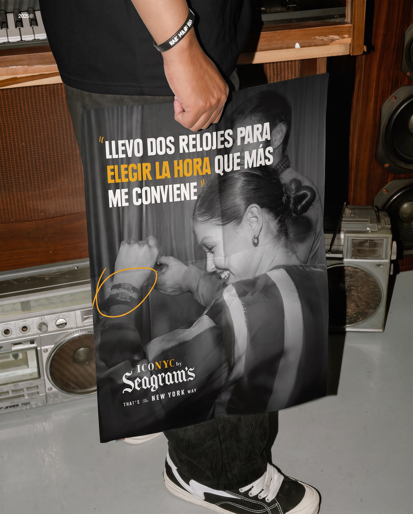
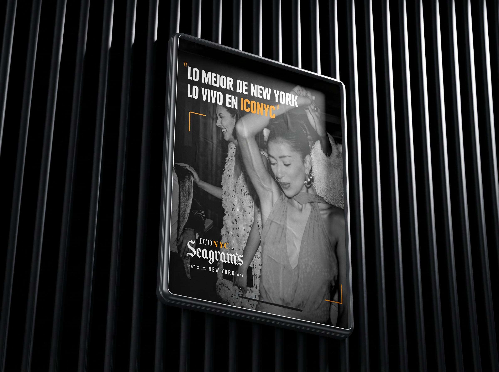
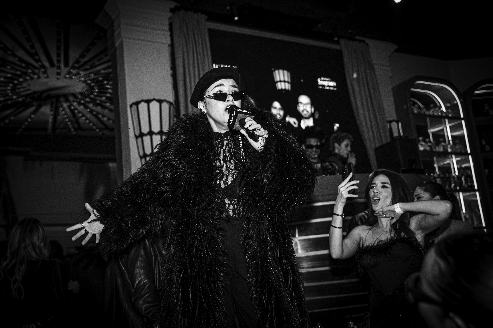

ICONYC BY
SEAGRAM'S
There’s something about New York nights that makes them hard to forget, that feeling that anything can happen.
Seagram’s wanted to bring the spirit of its “Porque sí” campaign to the streets and turn it into an experience you could actually feel.
That idea became Iconyc by Seagram’s, a series of activations inspired by the freedom, excess and spontaneity of New York nightlife, with Studio 54 as its main reference.
A space where you could step through the door and leave Madrid behind for a while. Music, aesthetics and attitude coming together to experience, first-hand, a night with the soul of New York.
2025
VCCP AGENCY

VISUAL IDENTITY
VISUAL IDENTITY
VISUAL IDENTITY
